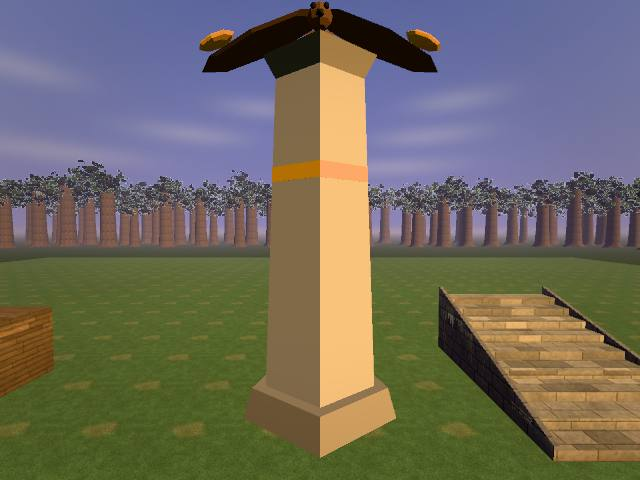
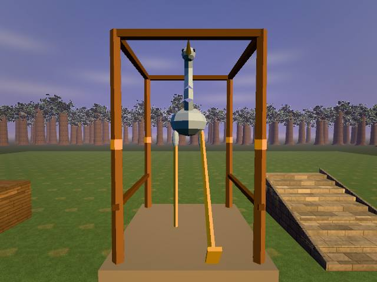
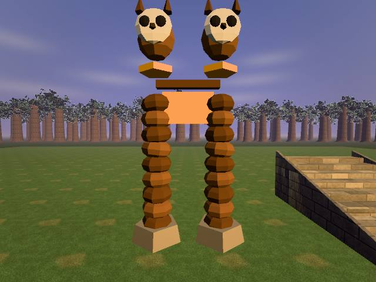
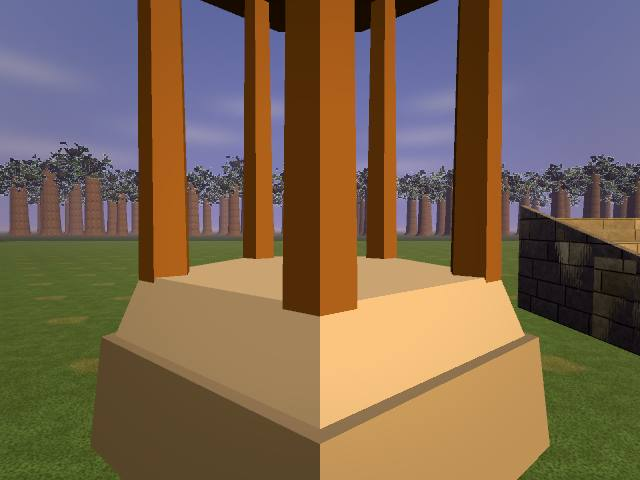

Towers
Towers are tough and fire homing bolts that cannot be dodged. They cannot be beak-shot. Structures take full Talon damage from guns, reduced damage from melee and Song abilities, and nothing from areas or damage over time. They do not heal or respawn.




Each lane has one Hawk, one Heron and two Wardens per flock, and each flock has two Shrines. They fall in order, so a lane is pushed one tower at a time.
| Structure | Health | Height | Footprint radius | Seeds to each hero |
|---|---|---|---|---|
| Sentinel Hawk | 4,500 | 10 m | 2 m | 300 |
| Stilt Heron | 9,000 | 10 m | 2.5 m | 600 |
| Nest Warden | 4,000 | 7 m | 1.5 m | 250 |
| Roost Shrine | 8,000 | 4 m | 2 m | 500 |
| Patron | 15,000 | 11 m | 8 m | none (ends the match) |
Sentinel Hawk
The first tower on each lane and vulnerable from the start. It punishes heroes who attack heroes under it: its bolts target a hero who hurt an ally first, then fledglings, then heroes.
| Hawk | Value |
|---|---|
| Health | 4,500 |
| Attack range | 22 m, one homing bolt every 1 s |
| Damage | 70 to heroes, 50 to fledglings |
| Ramp | +15% per consecutive shot on the same hero, up to +75% |
| Bolt speed | 60 m/s, cannot be dodged |
| Seeds | 300 |
| Flex slots | 2 |
Stilt Heron
A larger second tower that can only be hurt once its lane's Hawk has fallen. It holds a beam on one target and stomps anyone who gets close.
| Heron | Value |
|---|---|
| Health | 9,000 |
| Beam range | 30 m, ticking every 0.25 s |
| Damage per tick | 25 to heroes, 12.5 to fledglings |
| Ramp | +2.5% per tick on the same hero, up to +50% |
| Stomp | every 4 s when an enemy is within 7 m; 0.5 s warning, 120 Song damage, 5 m knockback |
| Seeds | 600 |
| Flex slots | 1 |
Nest Warden
Paired gate posts. They become vulnerable once their lane's Heron has fallen, and defend the gates of the base.
| Warden | Value |
|---|---|
| Health | 4,000 |
| Attack range | 24 m, one homing bolt every 1 s |
| Damage | 80 to heroes, 60 to fledglings |
| Seeds | 250 |
Roost Shrine
Two inside each base. They can be damaged once both Wardens of any one lane have fallen, and they pulse damage at enemy heroes in range. Both Shrines must fall before the Patron can be damaged.
| Shrine | Value |
|---|---|
| Health | 8,000 |
| Pulse | every 3 s: 120 Song damage to enemy heroes within 12 m |
| Seeds | 500 |
| Flex slots | 1 |
See Economy for what each structure pays and which flex slots it unlocks.